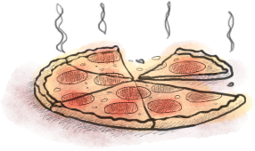

Друзьям и коллегам
из других компаний
Мы с удовольствием проводим открытые мероприятия, где каждый желающий может сделать мини-доклад о разработке или на любую другую интересную нам тему. Мы приглашаем в наш офис гостей, вместе слушаем интересных докладчиков, поедаем нехитрое угощение и играем в настольные игры.
Если у вас есть, чем поделиться с коллегами, вы хотите провести репетицию доклада перед ИТ-конференцией и получить конструктивную обратную связь - вся команда 7bits будет рада видеть вас в нашем офисе.
